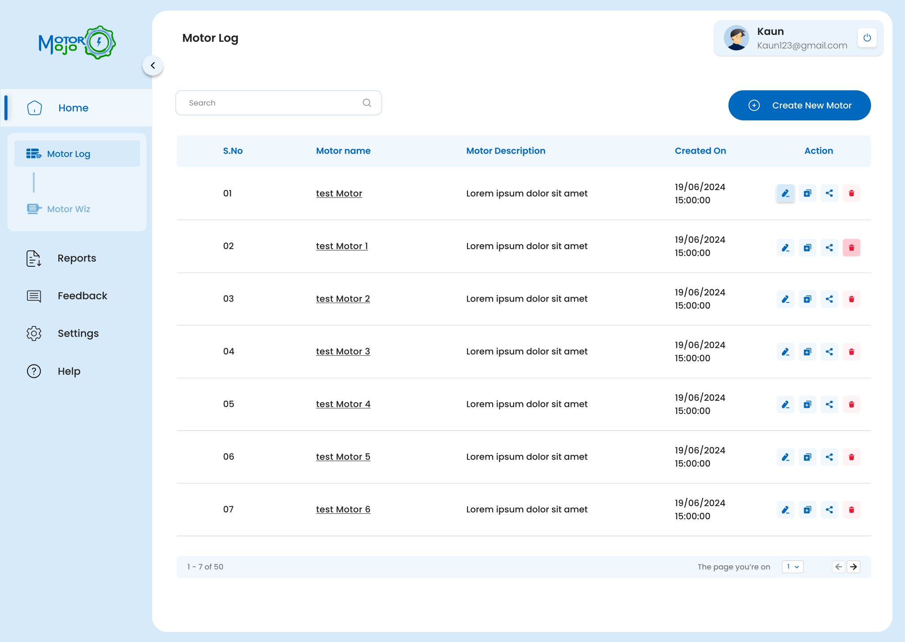
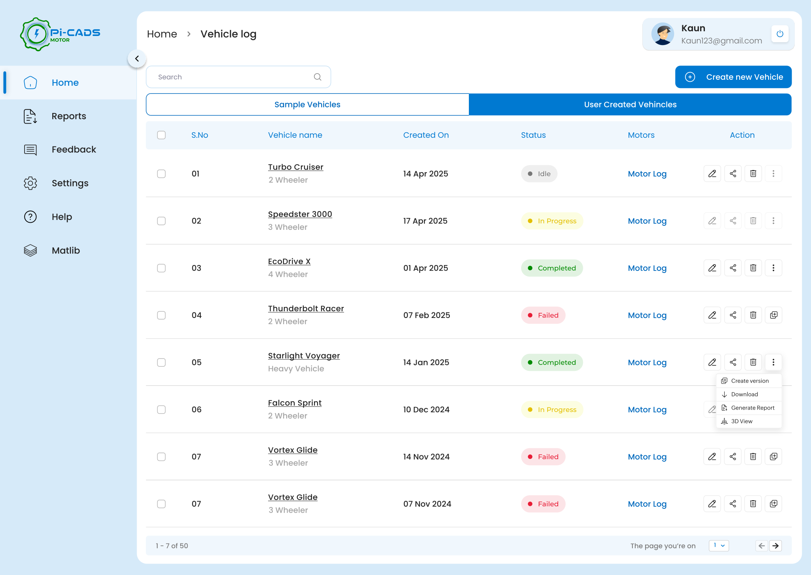

Added simulation status to logs
I added clear simulation states such as Idle, Running, Completed, and Failed so users could understand the run status without waiting until the final output screen.
SaaS product design · Motor simulation platform · Web app
Pi-CADS Motor is a browser-based motor simulation platform for engineers, EV teams, and students. It evolved from MotorMojo, an early proof-of-concept tool, into a more complete platform with guided inputs, simulation states, admin views, and light/dark UI systems.
I designed both MotorMojo and Pi-CADS Motor, including the core product flows, simulation screens, admin module, and landing pages for both products.
01 — Overview
MotorMojo started as a simple browser-based tool for motor simulation. It helped validate the idea that engineers and students could run motor design workflows without expensive desktop CAE software.
Pi-CADS Motor expanded that idea into a more professional platform — supporting multiple motor topologies, complex input flows, simulation states, admin controls, output views, and a stronger design system.
02 — Problem
Motor simulation requires many technical inputs across vehicle specs, motor geometry, materials, winding data, and simulation parameters.
The UX challenge was to make the workflow feel guided without removing the technical depth engineers needed.
03 — Solution
I designed the experience around a guided simulation flow:
The product used step-by-step inputs, default values, adaptive forms, and status-based actions to help users move through the process with more confidence.
04 — Screens
Some simulation parameters, admin data, and internal details are blurred or recreated with dummy data due to confidentiality.

05 — Refinement
Early designs did not make simulation state visible enough. Users would run a simulation, step away, return expecting results, and only discover a failure after clicking through to the end of the output.


I added clear simulation states such as Idle, Running, Completed, and Failed so users could understand the run status without waiting until the final output screen.
Actions like edit, delete, duplicate, share, and view logs were handled after defining the simulation status. This made each action feel relevant to the current state of the vehicle or motor instead of being shown without context.
Each vehicle needed a direct motor log action so users could bypass vehicle details and move straight into the simulation history they wanted to inspect.
Sample vehicles gave new users a working starting point. Instead of facing an empty state, they could explore how simulation setup, inputs, logs, and outputs connected.
This was not part of the original scope. It was found during iteration, after watching engineers use the product and noticing where the workflow created uncertainty. The flow was then corrected by making simulation state, actions, and log access visible earlier.
06 — Key UX decisions
Instead of exposing every simulation parameter at once, I structured the input flow around the way users build a simulation: define the model, configure the physics, set boundaries, run, then inspect output.
The stepper was not just used to reduce clutter. It helped convert a complex engineering workflow into a sequence users could reason through without losing control.
Made simulation setup approachable for students and early users, while still keeping advanced parameters available for expert users.
Default values were added to help users reach a valid simulation faster, especially when they did not know every parameter at the beginning.
The intention was not to automate decisions blindly. Defaults acted as a safe starting point that users could inspect, learn from, and override when needed.
Reduced the fear of starting while still respecting expert control. Beginners could run a simulation, and advanced users could fine-tune it.
Instead of starting new users with an empty workspace, I introduced sample vehicles they could open, inspect, modify, and rerun.
The samples were not decorative onboarding content. They acted as working examples that taught users how inputs, solver settings, and outputs connect.
Helped users understand the product through exploration rather than instructions.
For engineering simulation tools, logs are not backend leftovers. They are often the only way users understand what happened during execution.
I treated logs, solver progress, warnings, and failure traces as first-class UX elements rather than hidden technical output.
Made long-running simulations feel observable and gave users confidence that the system was actively processing.
Simulation output is useful only when users can interpret it and decide what to do next.
The result area was planned around actions such as export, generate report, rerun with changes, or debug. The goal was to move users from result viewing to result-based iteration.
Turned simulation results into the next step of the workflow instead of a static endpoint.
07 — Outcome
MotorMojo helped validate the product direction as an early simulation tool. Pi-CADS Motor built on that foundation with a more scalable interface, guided workflows, simulation states, admin views, and a stronger design system.
Metrics are based on beta customer feedback, internal prototype walkthroughs, and usability observations. They are usability indicators, not post-launch analytics.
60%
Setup felt easier to follow. Beta users found the simulation setup clearer after dense motor parameters were split into guided stages.
2×
Blank-start friction reduced. Sample vehicles and default values helped new users reach their first simulation run faster.
<20%
Inline parameter guidance. Info buttons reduced student confusion by explaining each parameter directly at the point of input.
07 — Reflection
This project taught me that complex products do not become usable by hiding complexity. They become usable when the complexity is structured clearly.
Designing Pi-CADS also taught me to work closely with engineers, understand unfamiliar technical terms, and turn dense product logic into workflows that users can actually move through.